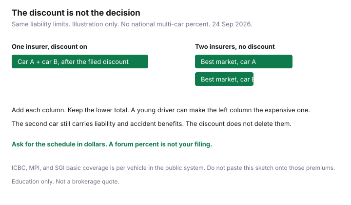

Insurance · Canada
Multi-Car Insurance Discounts in Canada: When Adding a Second Vehicle Actually Saves
A second car is not free, and a “multi-vehicle discount” is not a statute. In private-market provinces it is a rating factor each insurer files. In British Columbia, Manitoba, and Saskatchewan the basic policy is tied to the public insurer and the vehicle. Households either pay two full private premiums because nobody asked for the discount in writing, or they keep a sold car on the policy and insure a driver who no longer lives there. This page is the household math. How to run a broker-versus-direct shop, winter-tire discounts, telematics, and deductible or kilometre levers are already published under Transportation and are linked, not rewritten.
Disclosure: Auto broker quote flows and comparison sites are offer types. Saving Optimizer may earn a commission if partner links are added later. We do not currently claim a brokerage partnership. We do not quote a universal multi-car percentage, because there isn’t one. Education only. Provincial structure below follows the Insurance Bureau of Canada’s mandatory-requirements page as read 24 Sep 2026.
Key takeaways
- Private-market multi-vehicle discounts are filed rates, not a national percent. Ask for the schedule in writing. The second car still carries liability and accident benefits.
- Quote one insurer for both vehicles and two insurers for one vehicle each, on the same limits. A large discount can still lose to a much cheaper market on one of the cars.
- A young or high-risk driver can erase the discount. Price that driver on the older car, and price a separate policy, before you accept the household renewal.
- ICBC, Manitoba Public Insurance, and SGI do not work like an Ontario multi-car sticker. Basic coverage follows the public system. Optional cover is where a private-style discount might exist. Ask there.
- Remove a sold vehicle and update listed drivers at the change, not at renewal. Surplus premium is the quiet leak.
Map how multi-vehicle discounts work in private-market provinces vs public systems
The Insurance Bureau of Canada’s mandatory-requirements page, read 24 Sep 2026, splits the country into three shopping shapes. Multi-car math follows that split.
| System | Where you buy the minimum | What to ask about a second vehicle |
|---|---|---|
| Private market | Alberta, Ontario, Nova Scotia, New Brunswick, Newfoundland and Labrador, Prince Edward Island, Yukon, the Northwest Territories, and Nunavut, from a private insurer. Québec buys civil liability and vehicle damage privately; bodily injury is the SAAQ plan on the driver’s licence. | Does this insurer file a multi-vehicle discount, on which coverages, and does it require the same named insured, the same address, and private-passenger use on both? Get the percent or the dollar in writing. |
| Public basic | British Columbia (ICBC Basic Autoplan), Manitoba (Autopac), Saskatchewan (SGI). Optional physical damage may be available from the public insurer and, in some cases, from a private insurer. | Basic is per vehicle. Do not expect an Ontario-style percent off the public premium. Ask about distance or safety-rating levers the public insurer actually publishes, and about any multi-vehicle feature on optional collision. The ICBC guide and the SAAQ guide cover those systems. This page does not restate them. |
In Ontario each automobile has its own policy contract. Liability and accident benefits are not “shared for free” across two VINs because you have one login. A discount reduces a premium. It does not delete the second set of mandatory coverages. IBC’s Ontario line lists a third-party liability minimum of $200,000, accident benefits, and uninsured automobile. Households usually buy liability well above that minimum. Match the limit on both cars before you compare discounts.

List every driver, annual km, and vehicle class before you request quotes
Insurers rate drivers, kilometres, and vehicle class. A quote that is missing one of them is not a discount. It is a file that will be corrected, sometimes after a claim.
- Every driver in the household who has a licence and may drive the cars, including a teen with a learner’s permit if the application asks. Occasional versus principal is a fact about who drives which car most. The young-driver guide covers the honesty risk. Do not hide a licensed person to manufacture a discount.
- Annual kilometres for each vehicle, commute versus pleasure versus business, and the address where it is parked overnight. The deductible and mileage guide is the lever for honest kilometres. Use it. Do not re-derive it here, and do not cut the number below the odometer you can explain.
- Vehicle class and use. Two commuters are not two pleasure cars. A vehicle used for delivery or rideshare is a different class. Say so. A multi-car discount that assumed pleasure use disappears when the use is corrected, and a claim can be disputed if the use was wrong.
- Winter tires where an insurer offers the discount, including Ontario’s mandatory offer. Rules and the usual range are on the winter-tire discount guide. List the tires on the vehicle that actually wears them.
Write this list once, then give the same list to every quote. Different facts on different applications are how a “discount” becomes a cancellation.
Compare multi-car on one policy vs separate policies with different insurers
Run two structures before you bind.
- Structure A. Both vehicles with one insurer, multi-vehicle discount applied, same liability limit, same accident-benefits choices, same deductibles.
- Structure B. Each vehicle with the insurer that prices that driver and that VIN best, no multi-vehicle discount, same limits.
Structure A wins when the discount, plus any multi-policy saving if the home is in the same market, beats the specialist price on the expensive car. Structure B wins when one vehicle is a poor fit for the insurer that loves the other — a new driver, a sports model, a long commute, a conviction. You cannot see that from the discount percent alone. Add the two annual premiums, including tax as your province charges it on auto premiums, and compare totals.
How to collect those quotes from a broker market and a direct writer, without changing the coverage mid-comparison, is the broker-versus-direct guide. Telematics programs are a separate discount with a privacy and surcharge question; they are covered on the telematics guide. Do not let a usage-based offer replace the two-structure test.
In Québec, injury coverage is the public plan. The private policy is liability and damage. A household discount, if the insurer files one, sits on that private policy. Compare two private markets on Section B and the liability limit. Do not expect the SAAQ licence fee to shrink because you added a second car to a private policy.
Young or high-risk driver on the household: when separate rating is cheaper
The second car often arrives the same year a young driver is licensed or a partner returns to a long commute. That is when the multi-car discount and the driver rating fight each other.
Ask for three dollar totals, same limits:
- Young or high-risk driver as principal on the newer, more expensive vehicle, household multi-car discount on.
- That driver as principal on the older, cheaper-to-repair vehicle, the experienced driver as principal on the other, discount on if the insurer still allows it.
- A separate policy for the young driver’s car, and the rest of the household left on the original policy.
Row 3 sometimes wins because the conviction or the inexperience is no longer rating both VINs, even though you lose the multi-car percent. Row 2 sometimes wins because the expensive physical-damage premium is attached to the experienced driver. Row 1 is what the renewal does by default if you “just add them.” None of these rows is a licence to list the parent as the main driver of a car the teen takes to school every day. Misclassification is a claims problem, not a savings tip.
High-risk in this context means what the insurer rates: at-fault claims, suspensions, serious convictions, or a lapse. It is not a moral label. If one market refuses the household, a separate policy may be the only way the other cars stay in a standard market. Get that refusal in writing so the next quote is accurate.
Ask for the discount schedule in writing—do not assume the second car is free
Ask the broker or the insurer to show the discount schedule on the quote: the amount removed, the coverages it applies to, and what cancels it. A sentence in a phone call is not a schedule.
- If the quote says “multi-vehicle included” and does not show dollars, ask for the premium with and without the second vehicle so you can see the marginal cost of car two.
- The marginal cost should include liability, accident benefits, and any income-replacement or optional benefits you kept. In Ontario those are real premiums on each car. A collision discount on a beater with no collision coverage is worth nothing.
- Do not assume the second car is free because a forum said “the second car is 25% off.” That figure is not a filing you can enforce. If your quote shows a different number, the quote is the number.
- A loyalty or bundle sticker is a different line. The loyalty guide separates tenure pricing from a real multi-policy comparison. A multi-car discount can hide inside a household that has not shopped in three years.
Annual recheck: remove sold vehicles and update listed drivers to avoid surplus premium
Once a year, and on the day something changes, reconcile the policy to the driveway.
- Sold or written-off vehicles. Remove them when the ownership transfers. Premium for a VIN you no longer own is surplus. A buyer’s crash while the car is still on your contract is a fact pattern you do not want. Ask what proof of sale the insurer wants.
- New drivers and departed drivers. A teen who got a G2, a partner who moved out, a parent who stopped driving. Listed-driver lists that are a year stale either overcharge or misrepresent. Both are expensive.
- Kilometres and use. Retirement, a new job, or a work-from-home year changes the commute. Update the number. The mileage guide is the method.
- Garaging address. A student who takes the car to another city may need that postal code on the policy. A discount built on the parents’ garage is not a discount if the car sleeps elsewhere.
Do this in the same sitting as the annual review, ideally 45 days before renewal so a corrected list can be shopped rather than rubber-stamped. The point of the recheck is a premium that matches the cars you have, not a lower number bought by omitting a driver.
Sources & date stamps
- Insurance Bureau of Canada, mandatory auto insurance requirements — private versus public systems, Ontario minimum liability $200,000 plus accident benefits and uninsured automobile. Page describes 2025 updates; used 24 Sep 2026.
- FSRA, working with your broker, agent, or insurer — consumer path for Ontario purchases. Used 24 Sep 2026.
- Multi-vehicle percentages are insurer filings. This page does not publish one. ICBC distance discounts and SAAQ versus private damage are on the Transportation guides linked above.
Frequently asked questions
Is there a standard multi-car discount in Canada?
No. In private-market provinces each insurer files its own factor. Public systems in B.C., Manitoba, and Saskatchewan rate basic coverage through the public insurer, per vehicle. Ask for the dollar on your quote.
Should both cars be on one policy?
Quote that structure and quote the cars apart, at the same liability limits and deductibles. Keep whichever total is lower. A multi-car percent can lose to a much cheaper market on one of the vehicles.
Does adding a young driver cancel the discount?
It can. Price the young driver as principal on each vehicle, and price a separate policy, before you accept the renewal. Listing a parent as the main driver of a car the young person uses most is misrepresentation.
What if I sell one of the cars?
Tell the insurer when ownership transfers and remove that vehicle. Waiting until renewal means you pay surplus premium and you leave a sold VIN on your contract.
Is this brokerage advice?
No. Education only. Broker quote flows are an offer type. We do not claim a partnership with any brokerage or insurer.